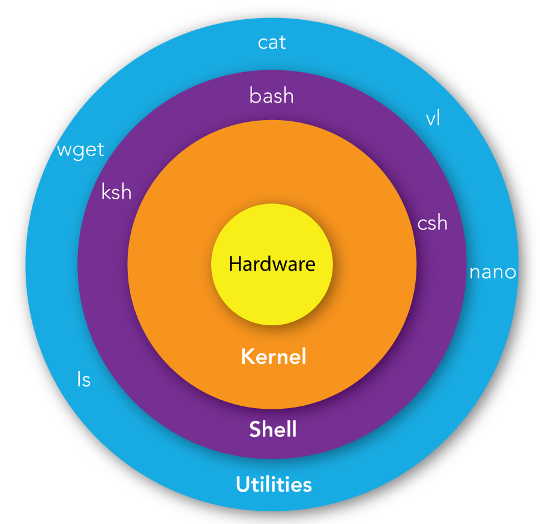
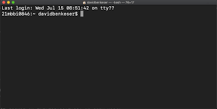

Prior to 1984, your personal computers didn't have a graphical interface we now refer to our Desktop. Even today, graphics requires processing a lot of data through specialized hardware (i.e. Graphics Card).
The majority of applications written for bioinformatics are designed to run on large computer clusters use Linux/Unix. Unix is a terminal based operating system that has been around since 1969, when computers were very limited. The programmers had to develop complex algorithms to run programs and analyze data on such limited systems. This led to a lot of the innovations that are the fundamentals of computers science today. There were a few different versions of Unix. If you have an Apple - it's based on BSD developed at UC Berkeley. In 1983, the GNU Project was started to create a free version of Unix. However, it lacked a functional kernel. In the 1990s, Linus Torvalds created Linux kernel to run the the GNU Unix sytem.
To clarify what we're actually interacting with in the Terminal is a shell , which is an interactive interpreter between us as users and the kernel, which controls how the operating system interacts with the hardware.

From inside to the outside:
Just as there are different varieties of Hardware, there are different varieties of Kernel, Shell, and Utilities
The most common Shells are Z shell and Bash. On most systems, you can choose which Shell you use.
Bash or Bourne Again Shell is the most common and known for it simplicity and compatibility across systems. It is typically the default for Linux distributions.
ZSH or Z shell was designed to extend Bash functionality and customizations. For the most part, it's compatible with Bash. It is typically the default for Mac OS.
We'll be focusing on using Bash because it's the most often used Shell on Linux research systems. Really, the only difference we'll encounter is in Lesson 10, where we'll see there are a few differences in filenames used when customizing our shell environment.
For the purposes of this course, Z Shell and Bash are going to be nearly identical.
Terminal is a text-based interface with your computer. It allows you to navigate your filesystem and control your operating system.
It looks something like this:

$, which denotes your are in the system shell and it's ready to accept a command.
Operating systems that were built on top of Unix/Linux systems provide access to the UNIX environment via a default Terminal program. There are many aftermarket Terminal programs that provide users with additional features, such as Tabs.
Default Unix/Linux Terminal Programs
| OS | UNIX/Linux | Terminal Program |
|---|---|---|
| Mac OSX | Darwin BSD | Terminal |
| Linux | Linux | Terminal |
| Windows | None | None |
You'll notice that Windows doesn't have any UNIX/Linux and no default Terminal program. This is because Microsoft was originally based on an operating system called MS-DOS, which looks similar at first glance, but provides a whole different set of commands. The equivalent for Terminal was Command Prompt. In later versions of Windows, Microsoft has implemented PowerShell, which provides additional functionality to interact with the Windows operating system.
Open your terminal program, and follow along. In the examples, below you'll see a $ at the start of the line to denote what should be typed at the command prompt. If the computer replies, with some output - notice that it doesn't have a preceding $
$ $ example_command $: command not found
$ $ example_command
$: command not foundThe $ in the examples is only to delineate between input commands and outputs from the command. If the line doesn't start with a $ then it represents the output of the previous command.
Note: Lines starting with a # are meant as comments. The shell will ignore any line starting with a # or anything after the # mark.
Whether referring to commands, files, or arguments, Unix is case-sensitive
$ pwd /home/plott # This is my home directory
$ pwd
/home/plott
# This is my home directorypwd prints out your present working directory this is the folder that you are in.
$ PWD PWD: command not found
$ PWD
PWD: command not foundNotice that if we change the capitalization of the command - it's no longer found. Unix is a case-sensitive - meaning that PWD is not the same as pwd
$ pWd Command 'pWd' not found, did you mean: command 'pwd' from deb coreutils (8.32-4.1ubuntu1.2) command 'pd' from deb puredata-core (0.52.1+ds0-1) command 'psd' from deb profile-sync-daemon (6.34-1) command 'pdd' from deb pdd (1.5-1) Try: sudo apt install <deb name>
$ pWd
Command 'pWd' not found, did you mean:
command 'pwd' from deb coreutils (8.32-4.1ubuntu1.2)
command 'pd' from deb puredata-core (0.52.1+ds0-1)
command 'psd' from deb profile-sync-daemon (6.34-1)
command 'pdd' from deb pdd (1.5-1)
Try: sudo apt install <deb name>If we make a mistake and capitalize one letter, it's is also incorrect. But sometimes, it'll try to help you out by suggesting some command you possibly meant to type.
spaces as delimiters between commands, options, and arguments.$ ls -alh total 24K drwxrwxr-x 2 plott plott 4.0K Mar 10 15:07 . drwxr-xr-x 190 plott plott 20K Mar 10 15:07 ..
$ ls -alh
total 24K
drwxrwxr-x 2 plott plott 4.0K Mar 10 15:07 .
drwxr-xr-x 190 plott plott 20K Mar 10 15:07 ..The ls command list the files and directories of your current pwd. The argument/options -alh tells ls that we want to list:
1K instead of 1024Many Unix commands allow you to combine multiple options, so -a, -l, -h becomes -alh
However, if we forget a space between the command and the options, Unix interprets this as a command:
$ ls-alh ls-alh: command not found
$ ls-alh
ls-alh: command not foundSince there is not command called ls-alh the it fails.
If we add extra space between the options, we also fail. Unix interprets this as list all files for a file or directory called l and same for h
$ ls -a l h ls: cannot access 'l': No such file or directory ls: cannot access 'h': No such file or directory
$ ls -a l h
ls: cannot access 'l': No such file or directory
ls: cannot access 'h': No such file or directoryThe correct way to split
$ ls -a -l -h total 24K drwxrwxr-x 2 plott plott 4.0K Mar 10 15:07 . drwxr-xr-x 190 plott plott 20K Mar 10 15:16 ..
$ ls -a -l -h
total 24K
drwxrwxr-x 2 plott plott 4.0K Mar 10 15:07 .
drwxr-xr-x 190 plott plott 20K Mar 10 15:16 ..But what if you need to use a space or special character in a file name or other command. For example a file named Hello World.txt is valid in UNIX. Most UNIX users, really hate files with spaces and other characters, so you'll typically seek spaces replaced by _ underscore.
If you need to include a space in a filename, we escape it using the \ character. So, we have to type the filename as: Hello\ World.txt , which uses the \ to escape the space. Meaning that we use the as a character instead as a delimiter between options or arguments.
- or --. But beware, it's not a rule - just a best practice.Here is an example of GATK command to validate a SAM file - both ways are valid for the GATK program. Please don't expect this to work on your computer. GATK is a package of tools to process DNA sequencing data.
# **Don't Execute** $ gatk ValidateSamFile -i input.bam -MODE SUMMARY $ gatk ValidateSameFile I=input.bam MODE=SUMMARY
# **Don't Execute**
$ gatk ValidateSamFile -i input.bam -MODE SUMMARY
$ gatk ValidateSameFile I=input.bam MODE=SUMMARYThere are often at least a few options for Unix command, some even have hundreds of options. To find out available options for a command there are a few different ways.
manThe command man opens the man-page for a command. It requires an argument, which is the command you're interested in.
Let's look at the man-page for ls
$ man ls
LS(1) User Commands LS(1)
NAME
ls - list directory contents
SYNOPSIS
ls [OPTION]... [FILE]...
DESCRIPTION
List information about the FILEs (the current directory by default). Sort entries alphabetically if none of -cftuvSUX nor --sort is specified.
Mandatory arguments to long options are mandatory for short options too.
-a, --all
do not ignore entries starting with .
...
-R, --recursive
list subdirectories recursively
Manual page ls(1) line 13 (press h for help or q to quit)$ man ls
LS(1) User Commands LS(1)
NAME
ls - list directory contents
SYNOPSIS
ls [OPTION]... [FILE]...
DESCRIPTION
List information about the FILEs (the current directory by default). Sort entries alphabetically if none of -cftuvSUX nor --sort is specified.
Mandatory arguments to long options are mandatory for short options too.
-a, --all
do not ignore entries starting with .
...
-R, --recursive
list subdirectories recursively
Manual page ls(1) line 13 (press h for help or q to quit)The man-page for ls goes on for a while, so you can scroll down until you find the option you want or press q to quit
pwd and tar. What are some options for pwd ? What does tar do?-hSome commands have a quick help or usage statement built in to provide you with a shorter quicker help with the most commonly used options. However, you'll notice that this is the same option that ls uses for human-readable file sizes - ls is one of many basic unix commands that don't provide help via -h option.
$ curl -h
Usage: curl [options...] <url>
--abstract-unix-socket <path> Connect via abstract Unix domain socket
--alt-svc <file name> Enable alt-svc with this cache file
--anyauth Pick any authentication method
-a, --append Append to target file when uploading
... #Goes on and on without stopping, you'll have to scroll to the top to see the beginning$ curl -h
Usage: curl [options...] <url>
--abstract-unix-socket <path> Connect via abstract Unix domain socket
--alt-svc <file name> Enable alt-svc with this cache file
--anyauth Pick any authentication method
-a, --append Append to target file when uploading
... #Goes on and on without stopping, you'll have to scroll to the top to see the beginningman tar and tar --h? Which describes the application in more detail?ls to list one file/directory per line?touch, whoami, cd, mv, and cp command do? Did you have any issues finding what a command does?Some commands are defined by the SHELL or type of Command Prompt we use. Bash has a help command that can provide help on built-in commands.
$ help
$ help$ info
$ infohelp, man, and -h option for pwd, which ones are defined and what are the differences between them?man <command>Search Google for the man page for a given command.
curl. What does curl do? Try it in the command-line and google. Is it installed on your computer?When working in the terminal, your mouse doesn't really play a role, so it's all about typing out commands. It can be very repetitive typing out very long commands again and again. Luckily there are shortcuts withing the SHELL to help simplify.
| Keys | Description |
|---|---|
| up arrow | previous command |
| down arrow | next command |
| CTRL + e | Got to end of line |
| CTRL + a | Got to beginning of line |
| CTRL + c | Interrupt a running program |
| CTRL + z | Suspend a running program, restore with fg |
| tab | auto completion |
Up-Arrow - Previous CommandWe've actually executed a few different commands already. After the first time you've executed a command, it gets stored in your history. You can access previous commands by typing the Up-Arrow.
Down-Arrow - Next CommandSimilar to the Up-Arrow, you can navigate the next command in your history by pressing the Down-Arrow. This makes it simple to navigate the list of previous commands.
Up-Arrow 5 times. Then press the Down-Arrow 2 times. What was the command?CTRL + a or CTRL + e Moving from beginning to the end of the line and back again.Often times, we make a mistake on a along command and we need it'd be quicker to go to the beginning of the line to fix the error.
$ Echo "Hello, This is going to be a very long command because it goes on and on and on and on and on and on" Command 'Echo' not found, did you mean: command 'echo' from deb coreutils (9.4-2ubuntu2)
$ Echo "Hello, This is going to be a very long command because it goes on and on and on and on and on and on"
Command 'Echo' not found, did you mean:
command 'echo' from deb coreutils (9.4-2ubuntu2)Use Up-Arrow to get to the command and then CTRL+a to get to the beginning of the line. Change Echo to echo , then CTRL+e to go to the end of the line. Make any edits at the end of the line and then run the command.
$ echo "Hello, This is going to be a very long command because it goes on for a while." Hello, This is going to be a very long command because it goes on for a while.
$ echo "Hello, This is going to be a very long command because it goes on for a while."
Hello, This is going to be a very long command because it goes on for a while.CTRL+cWhen running commands on Unix, it can be easy to execute the wrong command or a command takes a lot longer than we thought it would take. A simple command that can run a long time in Unix is sleep. sleep pauses a program or terminal session for a given amount of time.
For example sleep 1 will pause for 1 second before continuing. sleep 1h will pause for 1 hour. If we need to terminate the sleep command we can press CTRL+c
$ sleep 1h # Press CTRL+c $
$ sleep 1h
# Press CTRL+c
$CTRL+zSometimes, you may want to pause a process before continuing it. To put a process on pause, press CTRL+z.
Paused commands can be resumed either by fg or bg commands.
fg stands for foreground and resumes the process in the terminal, which causes your terminal to wait until its completed until you can enter another command.
bg stand for background and resumes the process in the background, which causes all the
$ sleep 10; #Press CTRL+z [1]+ Stopped sleep 10 $ ls file1 file2 #Resume the sleep 10 command $ fg sleep 10
$ sleep 10;
#Press CTRL+z
[1]+ Stopped sleep 10
$ ls
file1 file2
#Resume the sleep 10 command
$ fg
sleep 10
It's important to remember that pausing a command, doesn't stop it completely. Unix maintains all the memory and resources that the program was using. If you paused a process that is using 16GB memory, that will still be reserved and you won't have access to that 16GB of memory until either the program is unpaused or killed.
TAB - Auto completionThe TAB key in UNIX is a real lifesaver. Instead of having to type out long filenames, directories, executable program names - you can type a few characters and then type the TAB key. If UNIX can figure out what you mean explicitly - it'll automatically complete what you're typing. If there are multiple options, typing TAB again will list the available options. Tab completion is great if you've forgotten the full program name or need help navigating the directories or files.
lsStart by typing pwd to get your present working directory. Next, type cd / this will take you to the root directory. We want to get back to where we were using tab completion.
Labex provides a free virtual machine that will work for this section
https://labex.io/labs/linux-your-first-linux-lab-270253?course=quick-start-with-linux
Installing WSL2 on Windows: Open PowerShell or Windows Command Prompt in administrator mode by right-clicking and selecting "Run as administrator", enter the wsl --install command, then restart your machine.
wsl --install
wsl --install